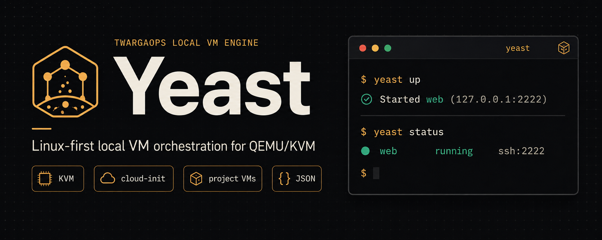

For Linux builders
No more random QEMU command archaeology.
Keep the machine definition beside the project and let Yeast handle image cache, cloud-init seed data, runtime files, state, and SSH.
TwargaOps local VM engine
Yeast is a small, sharp QEMU/KVM workflow for builders who want real machines without hand-writing the same VM plumbing every time.

Start here
$ curl -fsSL https://raw.githubusercontent.com/Twarga/yeast/main/install.sh | bashThe v0.1 loop
For Linux builders
Keep the machine definition beside the project and let Yeast handle image cache, cloud-init seed data, runtime files, state, and SSH.
For automation
Human output can feel polished. JSON output stays clean so LabsBackery and Yeast MCP can depend on it later.
For labs
v0.1 proves lifecycle. Next comes provisioning, snapshots, private networks, guest control, and full LabsBackery workflows.
$ mkdir yeast-demo
$ cd yeast-demo
$ yeast init
$ yeast pull ubuntu-24.04
$ yeast up
OK web is running
SSH 127.0.0.1:2222What Yeast is not
Yeast is the boring engine underneath the exciting things: repeatable local labs, AI-controlled VM workflows, and eventually hosted Twarga Cloud workers.
Read next